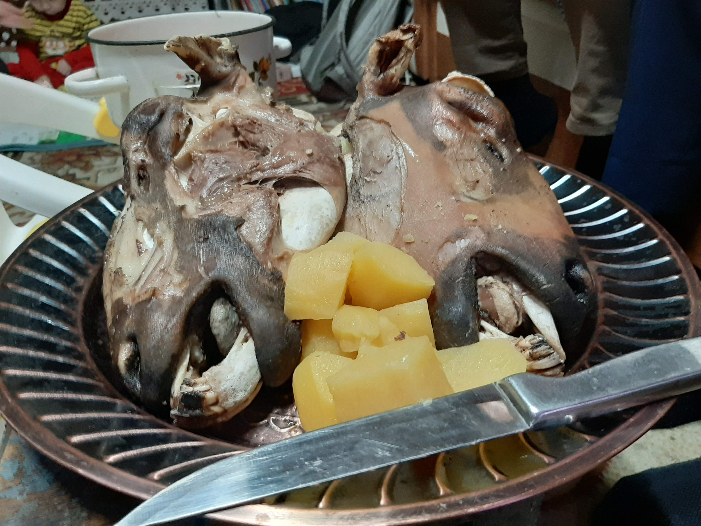
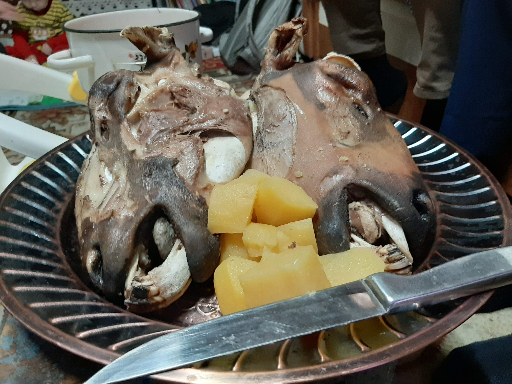

Mongolian Food
Food
Food is one of the biggest parts of Mongolian culture. Mongolian food is mostly meat that has a gamey flavor to it. It's not the most flavorful food and can be hard to consume at times. If you reject or refuse to eat food given to you from a Mongolia, it is seen as extremly rude. The best thing to do if you are having a hard time eating the food is to eat it very slow and they won't refill your bowl. Traditional Mongolian food is composed of mainly meat and milk. The milk is either made into a yogurt, fermented, or made into hard curds to chew on. A popular dish that you will be served at every home is called, buuz. Buuz is a steamed mutton dumpling. The main delicacy of Mongolia is the sheeps head. They will literally chop off the head of a sheep, then they will blowtourch the hair. After this, they will scrape the burnt hair off with a knife then boil the head then eat it. In Monogolia, they drink only hot liquids because they believe if you drink somethinig cold, you will get a sore throat. The national beverage is fermented horse milk wich taste like a milky beer. It's very hard to come by fruit or vegetables at a persons home. Your best option is to buy them from a local store. However, they can be rather expensive. There is a wide variety of Mongolian sweets which are mainly russian assorted choclates!


 
